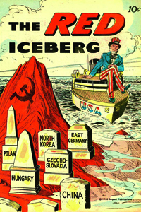
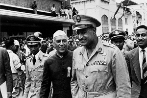
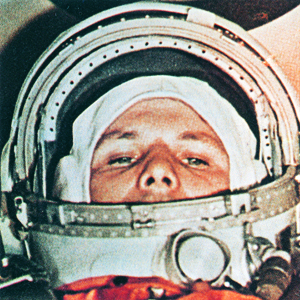
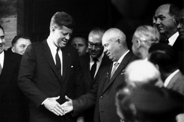
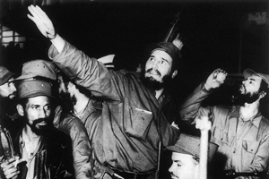
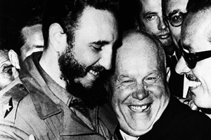
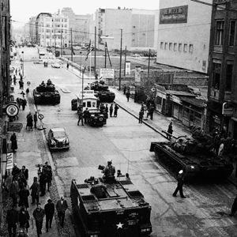
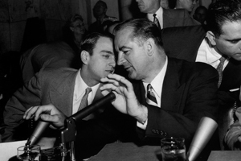

Lezione 20 La guerra fredda
La guerra fredda

-
190
205
-
300
715
-
130
600
-
155
479
-
240
240
-
230
210
-
145
452
-
180
230
-
160
505
-
140
550
-
200
440
-

USA
La copertina di un fumetto anticomunista americano: l'Iceberg Rosso, costellato dalle tombe dei paesi dell'orbita sovietica, minaccia la tranquilla imbarcazione capitanata dallo Zio Sam, leggendaria personificazione dello spirito americano.

BANDUNG
L'egiziano Nasser, l'indiano Nehru e il cinese Chu en Lai alla conferenza di Bandung, che sancì di fatto la nascita del Terzo Mondo, cioè di quel blocco di paesi che, almeno in teoria, non erano schierati né con il blocco americano ne con quello sovietico, e che per le loro condizioni economiche, sociali e culturali non aderivano all'ideologia capitalista né a quella comunista.
RUSSIA
12 aprile 1961: il maggiore dell'aviazione sovietica Juri Gagarin è il primo essere umano ad avventurarsi nello spazio, compiendo un intero volo orbitale intorno alla terra. Inizia l'era dell'esplorazione spaziale.
VIENNA
Il presidente sovietico Nikita Krusciov e quello americano John Fitzgerald Kennedy si incontrano a Vienna nel 1961: è l'inizio della distensione, almeno ufficiale, tra americani e sovietici dopo gli anni della Guerra fredda.
L'HAVANA
Una fotografia del gennaio 1959 che ritrae il rivoluzionario Fidel Castro alla testa delle sue truppe mentre entra vittorioso all'Avana: Cuba si affranca dalla dittatura di Batista e dal dominio econimco e politico americano.
CUBA
L'abbraccio fraterno e festoso tra Fidel Castro e Nikita Krusciov testimonia dei rapporti politici ed economici tra l'Unione Sovietica e Cuba: una spina nel fianco per gli Stati Uniti, a causa della posizione geografica dell'isola caraibica.
BERLINO
Berlino è la città simbolo del conflitto che oppone il blocco capitalista e quello comunista: la città viene letteralmente divisa in due dal celebre muro.
In questa foto vediamo il "Checkpoint Charlie", patrtugliato varco di confine tra la zona americana e quella sovietica.
WASHINGTON
Il senatore Joseph McCarthy e il suo collaboratore Roy Cohn: sono loro a presiedere il Comitato per le attività antiamericane, che investiga ossessivamente sulle vere o presunte tendenze comuniste di esponenti della via culturale americana, generando un vero e proprio clima di caccia alle streghe. Ne sono vittima importati scrittori e uomini di cinema, le cui opere vengono ferocemente boicottate.UNGHERIA
Nel 1956 in Ungheria un'insurrezione popolare viene repressa dall'esercito sovietico che occupa il paese. Il primo ministro Imre Nagy, che aveva appoggiato le richieste dei manifestanti, viene arrestato e fucilato due anni dopo. Nei partiti comunisti occidentali l'invasione provoca una forte disillusione nei confronti dell'Unione Sovietica, e molte defezioni soprattutto tra gli intellettuali.MOSCA
Il cinque marzo del 1953 muore a Mosca Josif Vissarionovic Dzugasvili, detto Stalin, dal 1924 capo indiscusso dell'Unione Sovietica. Aveva governato il paese con metodi dittatoriali, eliminando tutti gli oppositori interni ed esterni al partito e deportando intere popolazioni.
Secondo la commissione per la riabilitazione delle vittime istituita nel 1992, i morti diretti e indiretti causati dal regime furono oltre venti milioni. ALGERIA
Il primo luglio 1962 un referendum sancisce l'indipendenza dell'Algeria dalla Francia.
E' la conclusione di una guerra che aveva provocato oltre duecentomila morti, e aveva avuto ripercussioni anche in Francia, con una lunga serie di attentati.
I fatti algerini diventano il simbolo del processo di decolonizzazione, che in Africa si svolge in un arco di tempo molto più lungo. I primi stati africani ottengono l'indipendenza negli anni Cinquanta. L'ultimo, la Namibia, nel 1990, mentre in Sudafrica la maggioranza nera otterrà il potere soltanto quattro anni dopo, nel 1994.